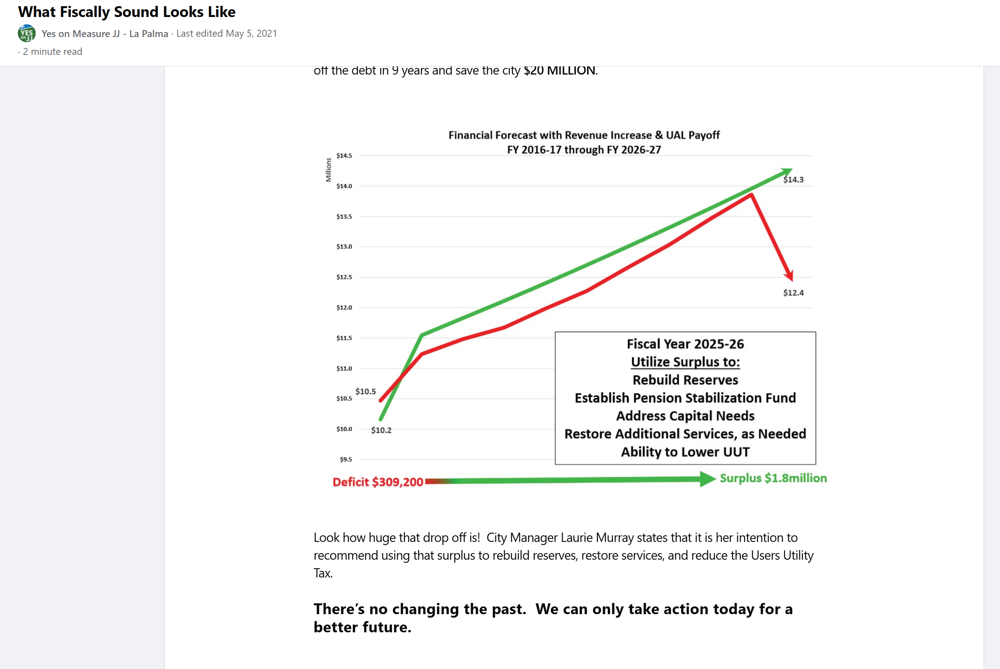

Measure JJ promised a nine-year pension payoff in 2016. The audited numbers, and what a sitting official told the council in 2025.
Covers the 2016 pension-tax promises and the one point in the record where those promises were checked against the City’s own audited numbers.
November 2016 — The City Council places Measure JJ, a permanent 1% sales tax, on the ballot. Opponents warn it is a “pension tax.” Proponents — including sitting council members — promise voters the tax will pay off the City's unfunded pension debt in 9 years, save the city $20 million, rebuild reserves, establish a pension stabilization fund, restore services, and lower the Utility Users Tax. Voters approve it. The City's unfunded pension liability (UAL) at the time: approximately $18.2 million (FY 2016-17).
August 5, 2025 — A resident asks the council for the current amount of the unfunded pension liability. The Interim City Manager cannot answer. Then-Mayor Pro Tem Nitesh Patel states from the dais that the liability has “gone down” due to discretionary payments. The City's own audited financial reports show the opposite: the UAL rose from $18.2 million in FY 2016-17 to $23.6 million in FY 2023-24 — a 29.8% increase — while the required annual employer contribution also grew. No council colleague corrects the record. The nine-year payoff promised to Measure JJ voters would have come due that same year. Neither staff nor the council has ever provided a public accounting of Measure JJ promises versus results.
The campaign's own chart — The committee that ran the 2016 Yes on Measure JJ campaign published its own financial forecast, titled “What Fiscally Sound Looks Like,” projecting the City's emergency-fund and reserve trajectory under the tax: a jump from a documented $309,200 deficit to a projected $1.8 million surplus by Fiscal Year 2025-26, a General Fund balance climbing from roughly $10.2 million (FY 2016-17) to $14.3 million (FY 2026-27) under the plan, and a promise that “with Measure JJ ending the depletion of reserves, the city has a plan to take that emergency fund, pay off the debt in 9 years and save the city $20 million.” The chart earmarked the projected FY 2025-26 surplus for four specific purposes: rebuilding reserves, establishing a Pension Stabilization Fund, addressing capital needs, and, eventually, lowering the Utility Users Tax.

The promise, attributed to the City Manager by name — As shown above, the committee's page names a specific city official as the one committed to acting on the chart's projected surplus: it states that City Manager Laurie Murray intended to recommend directing the FY 2025-26 surplus toward rebuilding reserves, restoring services, and lowering the Utility Users Tax, closing with the line that the past cannot be changed but today's action can build a better future. Murray retired effective December 19, 2019 — see Leadership Transitions — nearly six years before the fiscal year in which the campaign's own chart said she would make that recommendation. The official the campaign named as responsible for delivering the promised surplus left office long before the year the promise came due.
CalPERS' June 30, 2024 actuarial valuation — The most recent actuarial valuations CalPERS has published for the City's two pension plans — Safety (Police) and Miscellaneous — set required contributions for Fiscal Year 2026-27, the same fiscal year the campaign's own chart identified as the year of the promised payoff and surplus. These valuations are prepared on a different basis than the ACFR-sourced Net Pension Liability figures cited above — CalPERS measures funding-basis UAL against the market value of plan assets, while audited financial statements use the GASB 68 basis — so the two sets of figures are not directly interchangeable, and both are presented here on their own terms. Per CalPERS' own June 30, 2024 reports for the City of La Palma:
Promise vs. documented result — The comparison below places the campaign's specific, quantified commitments next to what CalPERS' own records show nine years later.
| Measure JJ Campaign Promise (2016) | Documented Result (CalPERS actuarial valuation, as of June 30, 2024) |
|---|---|
| “Pay off the debt in 9 years” (by FY 2025-26) | Combined UAL $25,322,950 across both plans as of 6/30/2024. CalPERS' current amortization schedule does not project payoff until roughly FY 2040-41 on the Safety plan — about three decades after the vote, not nine years. |
| “Save the city $20 million” | No public accounting of any realized savings has been identified in the records reviewed for this document. CalPERS' current schedule shows $7,927,851 in interest still projected to be paid on the Safety plan's UAL alone. |
| Required annual payment declining as the debt is retired | Combined required UAL payment is $2,545,854 for FY 2026-27. CalPERS projects that payment rising — not falling — to $2,999,000 by FY 2031-32. |
| Reserves rebuilt; Pension Stabilization Fund established; ability to lower the Utility Users Tax (all promised for FY 2025-26) | Not addressed by the CalPERS actuarial data, which covers the pension plans only, not the General Fund. See note below. |